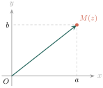
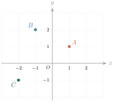
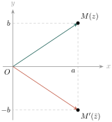
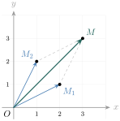
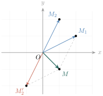
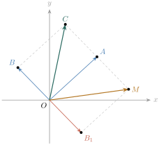
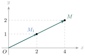
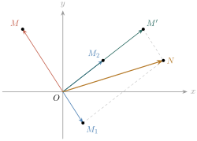

ចំនួនកុំផ្លិច នៅក្នុងអំឡុងឆ្នាំ \(\displaystyle 1572\) អ្នកគណិតវិទូជនជាតិអ៊ីតាលីម្នាក់ឈ្មោះ Rafaelle Bombelli បានបង្ហាញឱ្យឃើញថា សំណុំចំនួនពិត \(\displaystyle \mathbb{R}\) មិនទាន់គ្រប់គ្រាន់សម្រាប់ដោះស្រាយសមីការពីជគណិតដែលមានទម្រង់ \(\displaystyle x^2 + a = 0\) ដែល \(\displaystyle a > 0\) នោះទេ ។ ដើម្បីដោះស្រាយសមីការនេះ គេត្រូវបង្កើតចំនួនមួយទៀតគឺ \(\displaystyle i\) ដែល \(\displaystyle i^2 = -1\) ។
- ស្គាល់ចំនួនកុំផ្លិចទម្រង់ពីជគណិត
- គណនាប្រមាណវិធីលើចំនួនកុំផ្លិច
- តាងចំនួនកុំផ្លិចក្នុងប្លង់ ។
1. សញ្ញាណនៃចំនួនកុំផ្លិច
នៅថ្នាក់ទី \(\displaystyle 10\) ក្នុងជំពូក \(\displaystyle 3\) មេរៀនទី \(\displaystyle 1\) យើងបានស្គាល់រួចមកហើយនូវសញ្ញាណនៃចំនួនកុំផ្លិច ។ ចំនួនកុំផ្លិចជាចំនួនដែលមានទម្រង់ \(\displaystyle a + bi\) ដែល \(\displaystyle a\) និង \(\displaystyle b\) ជាចំនួនពិត ។ \(\displaystyle i\) ហៅថា ឯកតានិមិត្ត ដែល \(\displaystyle i^2 = -1\) ។ ផលគុណនៃចំនួនពិតខុសពីសូន្យនិង \(\displaystyle i\) ហៅថា ចំនួននិមិត្ត ។ ដូចជា \(\displaystyle -i\), \(\displaystyle 7i\), \(\displaystyle \frac{2}{3}i\) ជាចំនួននិមិត្ត ។
ទម្រង់ \(\displaystyle a + bi\) ដែល \(\displaystyle a\) និង \(\displaystyle b\) ជាចំនួនពិតហៅថា ទម្រង់ពីជគណិត នៃចំនួនកុំផ្លិច ។ \(\displaystyle a\) ហៅថា ផ្នែកពិត ហើយ \(\displaystyle b\) ហៅថា ផ្នែកនិមិត្ត ។
ឧទាហរណ៍ 1 : បើគេតាង \(\displaystyle z\) ជាចំនួនកុំផ្លិចដែល \(\displaystyle z = -2 + 3i\) នោះ \(\displaystyle a = -2\) និង \(\displaystyle b = 3\) ។
បើគេតាង \(\displaystyle z\) ជាចំនួនកុំផ្លិចដែល \(\displaystyle z = -3i\) នោះ \(\displaystyle a = 0\) និង \(\displaystyle b = -3\) ។
\(\displaystyle 4 - 3i\) ជាចំនួនកុំផ្លិចឆ្លាស់នៃចំនួនកុំផ្លិច \(\displaystyle 4 + 3i\) ។
៖ បើគេមានចំនួនកុំផ្លិច \(\displaystyle z = a + bi\) នោះចំនួនកុំផ្លិចឆ្លាស់នៃ \(\displaystyle z\) តាងដោយ \(\displaystyle \bar{z} = a - bi\) ។
\(\displaystyle -3 - i\) ជាចំនួនកុំផ្លិចផ្ទុយនៃ \(\displaystyle 3 + i\) ។
៖ ចំនួនកុំផ្លិចផ្ទុយនៃចំនួនកុំផ្លិច \(\displaystyle z = a + bi\) តាងដោយ \(\displaystyle -z = -a - bi\) ។
រកចំនួនកុំផ្លិចឆ្លាស់ និងចំនួនកុំផ្លិចផ្ទុយនៃចំនួនកុំផ្លិច \(\displaystyle 1 - 3i\), \(\displaystyle 3 + 4i\), \(\displaystyle 24\) និង \(\displaystyle -i\) ។
| ចំនួនកុំផ្លិច | ចំនួនកុំផ្លិចឆ្លាស់ | ចំនួនកុំផ្លិចផ្ទុយ |
| \(\displaystyle 1 - 3i\) | \(\displaystyle 1 + 3i\) | \(\displaystyle -1 + 3i\) |
| \(\displaystyle 3 + 4i\) | \(\displaystyle 3 - 4i\) | \(\displaystyle -3 - 4i\) |
| \(\displaystyle 24\) | \(\displaystyle 24\) | \(\displaystyle -24\) |
| \(\displaystyle -i\) | \(\displaystyle i\) | \(\displaystyle i\) |
រកចំនួនកុំផ្លិចឆ្លាស់ និងចំនួនកុំផ្លិចផ្ទុយនៃចំនួនកុំផ្លិច \(\displaystyle 4 + i\), \(\displaystyle 3 - 5i\), \(\displaystyle -12\) និង \(\displaystyle 3i\) ។
មើលចម្លើយ
| ចំនួនកុំផ្លិច | ចំនួនកុំផ្លិចឆ្លាស់ | ចំនួនកុំផ្លិចផ្ទុយ |
| \(\displaystyle 4 + i\) | \(\displaystyle 4 - i\) | \(\displaystyle -4 - i\) |
| \(\displaystyle 3 - 5i\) | \(\displaystyle 3 + 5i\) | \(\displaystyle -3 + 5i\) |
| \(\displaystyle -12\) | \(\displaystyle -12\) | \(\displaystyle 12\) |
| \(\displaystyle 3i\) | \(\displaystyle -3i\) | \(\displaystyle -3i\) |
2. ប្រមាណវិធីលើចំនួនកុំផ្លិច
2.1. វិធីបូកចំនួនកុំផ្លិច
ឧទាហរណ៍ 1 : \(\displaystyle (5 + 3i) + (-1 + 2i) = [5 + (-1)] + (3 + 2)i = 4 + 5i\) ។
ឧទាហរណ៍ 2 : \(\displaystyle (2 + 5i) + (3 - 2i) = (2 + 3) + (5 - 2)i = 5 + 3i\) ។
៖ \(\displaystyle (a + bi) + (c + di) = (a + c) + (b + d)i\) ។
2.2. វិធីដកចំនួនកុំផ្លិច
ឧទាហរណ៍ 1 : \(\displaystyle (9 - 2i) - (4 - 4i) = (9 - 4) + [-2 - (-4)]i = 5 + 2i\) ។
ឧទាហរណ៍ 2 : \(\displaystyle (6 + 4i) - (3 + 6i) = (6 - 3) + (4 - 6)i = 3 - 2i\) ។
៖ \(\displaystyle (a + bi) - (c + di) = (a - c) + (b - d)i\) ។
2.3. វិធីគុណចំនួនកុំផ្លិច
ឧទាហរណ៍ 1 : ដោយ \(\displaystyle i^2 = -1\) គេបាន ៖
ឧទាហរណ៍ 2 :
៖ \(\displaystyle (a + bi)(c + di) = (ac - bd) + (ad + bc)i\) ។
2.4. វិធីចែកចំនួនកុំផ្លិច
ឧទាហរណ៍ 1 : គណនា \(\displaystyle \dfrac{3}{2 + i}\) រួចសរសេរជាទម្រង់ពីជគណិត ។
គេបាន \(\displaystyle \dfrac{3}{2 + i} = \dfrac{3(2 - i)}{(2 + i)(2 - i)}\) (គុណនឹងចំនួនកុំផ្លិចឆ្លាស់នៃភាគបែង) ។
ដោយប្រើរូបមន្ត \(\displaystyle (a + b)(a - b) = a^2 - b^2\) គេបាន \(\displaystyle (2 + i)(2 - i) = 2^2 - i^2 = 4 + 1 = 5\) ។
ដូច្នេះ \(\displaystyle \dfrac{3}{2 + i} = \dfrac{6 - 3i}{5} = \dfrac{6}{5} - \dfrac{3}{5}i\) ។
ឧទាហរណ៍ 2 : គណនា \(\displaystyle \dfrac{3 + 2i}{1 - 3i}\) រួចសរសេរជាទម្រង់ពីជគណិត ។
គេបាន \(\displaystyle \dfrac{3 + 2i}{1 - 3i} = \dfrac{(3 + 2i)(1 + 3i)}{(1 - 3i)(1 + 3i)}\) (គុណនឹងចំនួនកុំផ្លិចឆ្លាស់នៃភាគបែង) ។
ដោយប្រើរូបមន្ត \(\displaystyle (a + b)(a - b) = a^2 - b^2\) គេបាន \(\displaystyle (1 - 3i)(1 + 3i) = 1^2 - (3i)^2 = 1 - 9i^2 = 10\) ។
ដូច្នេះ \(\displaystyle \dfrac{3 + 2i}{1 - 3i} = \dfrac{3 + 9i + 2i + 6i^2}{10} = \dfrac{-3 + 11i}{10} = -\dfrac{3}{10} + \dfrac{11}{10}i\) ។
៖ ចំពោះ \(\displaystyle c + di \ne 0\)
សរសេរចំនួនកុំផ្លិច \(\displaystyle z\) ជាទម្រង់ពីជគណិតដែល \(\displaystyle z = \dfrac{-41 + 63i}{50} - \dfrac{6i + 1}{1 - 7i}\) ។
ដូច្នេះ \(\displaystyle z = i\) ។
គណនាចំនួន \(\displaystyle z = \dfrac{(2 - i)(1 + i)}{2i(5 + 3i)}\) ។
ដូច្នេះ \(\displaystyle z = -\dfrac{1}{17} - \dfrac{9}{34}i\) ។
សរសេរចំនួនកុំផ្លិច \(\displaystyle z = \left(\dfrac{-1 + \sqrt{3}\,i}{2i}\right)^2\) ជាទម្រង់ពីជគណិត ។
មើលចម្លើយ
\(\displaystyle (-1 + \sqrt{3}\,i)^2 = 1 - 2\sqrt{3}\,i + 3i^2 = -2 - 2\sqrt{3}\,i\) ហើយ \(\displaystyle (2i)^2 = -4\) ។
ដូច្នេះ \(\displaystyle z = \dfrac{-2 - 2\sqrt{3}\,i}{-4} = \dfrac{1}{2} + \dfrac{\sqrt{3}}{2}i\) ។
គេមានចំនួនកុំផ្លិច \(\displaystyle z_1 = i\) និង \(\displaystyle z_2 = \dfrac{1}{2} + \dfrac{\sqrt{3}}{2}i\) ។ គណនា \(\displaystyle \dfrac{z_1 + z_2}{1 + z_1 z_2}\) ។
មើលចម្លើយ
\(\displaystyle z_1 + z_2 = \dfrac{1}{2} + \left(1 + \dfrac{\sqrt{3}}{2}\right)i = \dfrac{1 + (2 + \sqrt{3})i}{2}\) ។
\(\displaystyle z_1 z_2 = \dfrac{1}{2}i + \dfrac{\sqrt{3}}{2}i^2 = -\dfrac{\sqrt{3}}{2} + \dfrac{1}{2}i\) នាំឱ្យ \(\displaystyle 1 + z_1 z_2 = \dfrac{(2 - \sqrt{3}) + i}{2}\) ។
គេបាន \(\displaystyle \dfrac{z_1 + z_2}{1 + z_1 z_2} = \dfrac{1 + (2 + \sqrt{3})i}{(2 - \sqrt{3}) + i} = \dfrac{[1 + (2 + \sqrt{3})i][(2 - \sqrt{3}) - i]}{(2 - \sqrt{3})^2 + 1}\) ។
ភាគយក \(\displaystyle = (2 - \sqrt{3}) - i + (2 + \sqrt{3})(2 - \sqrt{3})i + (2 + \sqrt{3}) = 4 + (-1 + 1)i = 4\) ។ ភាគបែង \(\displaystyle = 8 - 4\sqrt{3}\) ។
ដូច្នេះ \(\displaystyle \dfrac{z_1 + z_2}{1 + z_1 z_2} = \dfrac{4}{8 - 4\sqrt{3}} = \dfrac{1}{2 - \sqrt{3}} = 2 + \sqrt{3}\) ។
ចំនួនកុំផ្លិចពីរ \(\displaystyle a + bi\) និង \(\displaystyle c + di\) ស្មើគ្នាលុះត្រាតែ \(\displaystyle a = c\) និង \(\displaystyle b = d\) ។
ឧទាហរណ៍ : គេមានសមីការ \(\displaystyle 3x - \sqrt{-25} = -6 + 3yi\) ។ គណនា \(\displaystyle x\) និង \(\displaystyle y\) ។
សរសេរផ្នែកខាងឆ្វេងនៃសមីការជាទម្រង់ពីជគណិត គេបាន \(\displaystyle 3x - 5i = -6 + 3yi\) ។
ចំនួនកុំផ្លិចទាំងពីរស្មើគ្នា លុះត្រាតែ \(\displaystyle 3x = -6\) និង \(\displaystyle -5 = 3y\) ។
ដូច្នេះ \(\displaystyle x = -2\) និង \(\displaystyle y = -\dfrac{5}{3}\) ។
2.5. លក្ខណៈនៃចំនួនកុំផ្លិចឆ្លាស់
ឧទាហរណ៍ : គេមានចំនួនកុំផ្លិច \(\displaystyle z_1 = 2 - 5i\) និង \(\displaystyle z_2 = -4 + i\) ។
គេបាន \(\displaystyle z_1 + z_2 = -2 - 4i \Rightarrow \overline{z_1 + z_2} = -2 + 4i\)
\(\displaystyle z_1 - z_2 = 6 - 6i \Rightarrow \overline{z_1 - z_2} = 6 + 6i\)
\(\displaystyle \overline{z_1} = 2 + 5i\) ; \(\displaystyle \overline{z_2} = -4 - i \Rightarrow \overline{z_1} + \overline{z_2} = -2 + 4i\) និង \(\displaystyle \overline{z_1} - \overline{z_2} = 6 + 6i\) ។
៖ បើ \(\displaystyle z_1\) និង \(\displaystyle z_2\) ជាចំនួនកុំផ្លិច នោះគេបាន \(\displaystyle \overline{z_1 \pm z_2} = \overline{z_1} \pm \overline{z_2}\) ។
ឧទាហរណ៍ : គេមានចំនួនកុំផ្លិច \(\displaystyle z_1 = 5 - i\) និង \(\displaystyle z_2 = 2 + 3i\) ។
គេបាន \(\displaystyle z_1 z_2 = (5 - i)(2 + 3i) = (10 + 3) + (15 - 2)i = 13 + 13i \Rightarrow \overline{z_1 z_2} = 13 - 13i\)
\(\displaystyle \overline{z_1} \times \overline{z_2} = (5 + i)(2 - 3i) = (10 + 3) + (-15 + 2)i = 13 - 13i\) ។
៖ បើ \(\displaystyle z_1\) និង \(\displaystyle z_2\) ជាចំនួនកុំផ្លិច នោះគេបាន \(\displaystyle \overline{z_1 \cdot z_2} = \overline{z_1} \times \overline{z_2}\) ។
ឧទាហរណ៍ : គេមានចំនួនកុំផ្លិច \(\displaystyle z_1 = 1 - 3i\) និង \(\displaystyle z_2 = 4 - i\) ។
គេបាន \(\displaystyle \dfrac{z_1}{z_2} = \dfrac{1 - 3i}{4 - i} = \dfrac{(1 - 3i)(4 + i)}{16 + 1} = \dfrac{(4 + 3) + (1 - 12)i}{17} = \dfrac{7 - 11i}{17}\)
\(\displaystyle \Rightarrow \overline{\left(\dfrac{z_1}{z_2}\right)} = \dfrac{7 + 11i}{17}\)
\(\displaystyle \dfrac{\overline{z_1}}{\overline{z_2}} = \dfrac{1 + 3i}{4 + i} = \dfrac{(1 + 3i)(4 - i)}{17} = \dfrac{(4 + 3) + (-1 + 12)i}{17} = \dfrac{7 + 11i}{17}\) ។
៖ បើ \(\displaystyle z_1\) និង \(\displaystyle z_2\) ជាចំនួនកុំផ្លិច នោះគេបាន \(\displaystyle \overline{\left(\dfrac{z_1}{z_2}\right)} = \dfrac{\overline{z_1}}{\overline{z_2}}\) ។
3. ចំនួនកុំផ្លិចក្នុងប្លង់កុំផ្លិច
3.1. ការតាងចំនួនកុំផ្លិចក្នុងប្លង់កុំផ្លិច
គេមានតម្រុយអរតូណរម៉ាល់ \(\displaystyle xOy\) ។ គេអាចតាងចំនួនកុំផ្លិច \(\displaystyle z = a + bi\) ដោយចំណុច \(\displaystyle M\) ដែលមានកូអរដោនេ \(\displaystyle (a, b)\) ក្នុងតម្រុយនេះ ។
គេថាចំណុច \(\displaystyle M\) ជា ចំណុចរូបភាព នៃចំនួនកុំផ្លិច \(\displaystyle z = a + bi\) គេកំណត់សរសេរ \(\displaystyle M(z)\) ។ ម្យ៉ាងទៀតចំនួនកុំផ្លិច \(\displaystyle z = a + bi\) អាចតាងដោយវ៉ិចទ័រ \(\displaystyle \overrightarrow{OM} = (a, b)\) ។ គេថាវ៉ិចទ័រ \(\displaystyle \overrightarrow{OM}\) ជា វ៉ិចទ័ររូបភាព នៃចំនួនកុំផ្លិច \(\displaystyle z = a + bi\) ហើយកំណត់សរសេរ \(\displaystyle \overrightarrow{OM} = (z)\) ។

នៅពេលដែលគេដាក់ចំណុចក្នុងប្លង់ដែលប្រដាប់ដោយតម្រុយនេះ ហៅថា ប្លង់កុំផ្លិច ។ អ័ក្ស \(\displaystyle (x'Ox)\) ហៅថា អ័ក្សពិត ហើយអ័ក្ស \(\displaystyle (y'Oy)\) ហៅថា អ័ក្សនិមិត្ត ។
ឧទាហរណ៍ : តាងរូបភាពនៃចំនួនកុំផ្លិច \(\displaystyle 1 + i\), \(\displaystyle -1 + 2i\) និង \(\displaystyle -2 - i\) ដោយចំណុចក្នុងប្លង់កុំផ្លិច ។
យើងតាងចំណុច \(\displaystyle A\), \(\displaystyle B\) និង \(\displaystyle C\) ជារូបភាពរៀងគ្នានៃចំនួនកុំផ្លិច \(\displaystyle 1 + i\), \(\displaystyle -1 + 2i\) និង \(\displaystyle -2 - i\) ដូចរូបខាងក្រោម ។

ចំពោះចំនួនកុំផ្លិចឆ្លាស់ ៖
ឧទាហរណ៍ : រូបភាពនៃចំនួនកុំផ្លិច \(\displaystyle z = a + bi\) និង \(\displaystyle \bar{z} = a - bi\) ។ តាងចំណុច \(\displaystyle M\) និង \(\displaystyle M'\) ជារូបភាពនៃចំនួនកុំផ្លិច \(\displaystyle z\) និង \(\displaystyle \bar{z}\) រៀងគ្នាដូចរូបខាងក្រោម ។

៖ ចំនួនកុំផ្លិចពីរឆ្លាស់គ្នា មានរូបភាពឆ្លុះគ្នាធៀបនឹងអ័ក្សពិត ។
កំណត់រូបភាពនៃចំនួនកុំផ្លិច \(\displaystyle 2 - 3i\), \(\displaystyle -4 + i\), \(\displaystyle 0 - 2i\) និង \(\displaystyle 1 + 0i\) ក្នុងប្លង់កុំផ្លិច ។
មើលចម្លើយ
ចំណុចរូបភាពមានកូអរដោនេ \(\displaystyle (2, -3)\), \(\displaystyle (-4, 1)\), \(\displaystyle (0, -2)\) និង \(\displaystyle (1, 0)\) រៀងគ្នា ។ ចំណុច \(\displaystyle (0, -2)\) ស្ថិតលើអ័ក្សនិមិត្ត ហើយចំណុច \(\displaystyle (1, 0)\) ស្ថិតលើអ័ក្សពិត ។
កំណត់រូបភាពនៃ \(\displaystyle z\), \(\displaystyle \bar{z}\) និង \(\displaystyle -z\) បើគេឱ្យ \(\displaystyle z = -2 - 3i\) ។
មើលចម្លើយ
\(\displaystyle z = -2 - 3i\) មានរូបភាព \(\displaystyle (-2, -3)\) ។ \(\displaystyle \bar{z} = -2 + 3i\) មានរូបភាព \(\displaystyle (-2, 3)\) ។ \(\displaystyle -z = 2 + 3i\) មានរូបភាព \(\displaystyle (2, 3)\) ។ រូបភាពនៃ \(\displaystyle \bar{z}\) ឆ្លុះនឹង \(\displaystyle z\) តាមអ័ក្សពិត ហើយរូបភាពនៃ \(\displaystyle -z\) ឆ្លុះនឹង \(\displaystyle z\) តាមគល់តម្រុយ \(\displaystyle O\) ។
4. ទិដ្ឋភាពរូបភាពនៃផលបូក ផលដកចំនួនកុំផ្លិច និងផលគុណចំនួនពិតជាមួយនឹងចំនួនកុំផ្លិច
4.1. ទិដ្ឋភាពរូបភាពនៃផលបូកចំនួនកុំផ្លិចក្នុងប្លង់កុំផ្លិច
ឧទាហរណ៍ : កំណត់រូបភាពនៃ \(\displaystyle z_1 + z_2\) ដែល \(\displaystyle z_1 = 2 + i\) និង \(\displaystyle z_2 = 1 + 2i\) ក្នុងប្លង់កុំផ្លិច ។
តាងវ៉ិចទ័រ \(\displaystyle \overrightarrow{OM_1}\) ជារូបភាពនៃចំនួនកុំផ្លិច \(\displaystyle z_1\) ហើយវ៉ិចទ័រ \(\displaystyle \overrightarrow{OM_2}\) ជារូបភាពនៃចំនួនកុំផ្លិច \(\displaystyle z_2\) ។
គេបាន \(\displaystyle z_1 + z_2 = \overrightarrow{OM_1} + \overrightarrow{OM_2} = \overrightarrow{OM}\) ជាអង្កត់ទ្រូងនៃប្រលេឡូក្រាម (លក្ខណៈផលបូកនៃវ៉ិចទ័រ) ។
ដូច្នេះ \(\displaystyle \overrightarrow{OM}\) ជារូបភាពនៃ \(\displaystyle z_1 + z_2\) ។ ផលបូក \(\displaystyle z_1 + z_2 = (2 + i) + (1 + 2i) = 3 + 3i\) ។

4.2. ទិដ្ឋភាពរូបភាពនៃផលដកចំនួនកុំផ្លិចក្នុងប្លង់កុំផ្លិច
ឧទាហរណ៍ : កំណត់រូបភាពនៃផលដក \(\displaystyle z_1 - z_2\) ដែល \(\displaystyle z_1 = 2 + i\) និង \(\displaystyle z_2 = 1 + 2i\) ។
យើងចាត់ទុកថា \(\displaystyle z_1 - z_2 = z_1 + (-z_2)\) ។ តាងវ៉ិចទ័រ \(\displaystyle \overrightarrow{OM_1}\) ជារូបភាពនៃចំនួនកុំផ្លិច \(\displaystyle z_1\) វ៉ិចទ័រ \(\displaystyle \overrightarrow{OM_2}\) ជារូបភាពនៃចំនួនកុំផ្លិច \(\displaystyle z_2\) និងវ៉ិចទ័រ \(\displaystyle \overrightarrow{OM'_2}\) ជារូបភាពនៃចំនួនកុំផ្លិច \(\displaystyle -z_2 = -1 - 2i\) ។
គេបាន \(\displaystyle z_1 - z_2 = z_1 + (-z_2) = \overrightarrow{OM_1} + \overrightarrow{OM'_2} = \overrightarrow{OM}\) ជារូបភាពនៃផលដក ។
ចំនួនកុំផ្លិច \(\displaystyle z_1 - z_2\) ដែល \(\displaystyle z_1 - z_2 = 2 + i - (1 + 2i) = 1 - i\) ។

កំណត់រូបភាពនៃ \(\displaystyle z_1 + z_2\) និង \(\displaystyle z_1 - z_2\) បើគេឱ្យ \(\displaystyle z_1 = 3 + 4i\) និង \(\displaystyle z_2 = -2 + 3i\) ។
តាងវ៉ិចទ័រ \(\displaystyle \overrightarrow{OA}\) ជារូបភាពនៃចំនួនកុំផ្លិច \(\displaystyle z_1\) និងវ៉ិចទ័រ \(\displaystyle \overrightarrow{OB}\) ជារូបភាពនៃចំនួនកុំផ្លិច \(\displaystyle z_2\) ។
គេបាន \(\displaystyle z_1 + z_2 = \overrightarrow{OA} + \overrightarrow{OB} = \overrightarrow{OC}\) ជាអង្កត់ទ្រូងនៃប្រលេឡូក្រាម \(\displaystyle OACB\) ។ ដូច្នេះ \(\displaystyle \overrightarrow{OC}\) ជារូបភាពនៃចំនួនកុំផ្លិច \(\displaystyle z_1 + z_2 = 1 + 7i\) ។
យើងចាត់ទុកថា \(\displaystyle z_1 - z_2 = z_1 + (-z_2)\) ។ តាងវ៉ិចទ័រ \(\displaystyle \overrightarrow{OB_1}\) ជារូបភាពនៃចំនួនកុំផ្លិច \(\displaystyle -z_2 = 2 - 3i\) ។
គេបាន \(\displaystyle z_1 - z_2 = z_1 + (-z_2) = \overrightarrow{OA} + \overrightarrow{OB_1} = \overrightarrow{OM}\) ។ ដូច្នេះ វ៉ិចទ័រ \(\displaystyle \overrightarrow{OM}\) ជារូបភាពនៃផលដកចំនួនកុំផ្លិច \(\displaystyle z_1 - z_2 = 5 + i\) ។

កំណត់រូបភាពនៃ \(\displaystyle z_1 + z_2\) និង \(\displaystyle z_1 - z_2\) បើគេឱ្យ \(\displaystyle z_1 = 2 + 4i\) និង \(\displaystyle z_2 = 1 - 2i\) ។
មើលចម្លើយ
\(\displaystyle z_1 + z_2 = (2 + 1) + (4 - 2)i = 3 + 2i\) មានរូបភាព \(\displaystyle (3, 2)\) ជាចុងអង្កត់ទ្រូងនៃប្រលេឡូក្រាមដែលមានជ្រុង \(\displaystyle \overrightarrow{OM_1} = (2, 4)\) និង \(\displaystyle \overrightarrow{OM_2} = (1, -2)\) ។
\(\displaystyle z_1 - z_2 = z_1 + (-z_2) = (2 + 4i) + (-1 + 2i) = 1 + 6i\) មានរូបភាព \(\displaystyle (1, 6)\) ជាចុងអង្កត់ទ្រូងនៃប្រលេឡូក្រាមដែលមានជ្រុង \(\displaystyle \overrightarrow{OM_1} = (2, 4)\) និង \(\displaystyle \overrightarrow{OM'_2} = (-1, 2)\) ។
4.3. ទិដ្ឋភាពរូបភាពនៃផលគុណចំនួនពិតនឹងចំនួនកុំផ្លិចក្នុងប្លង់កុំផ្លិច
ឧទាហរណ៍ : កំណត់រូបភាពនៃចំនួនកុំផ្លិច \(\displaystyle 2z\) បើ \(\displaystyle z = 2 + i\) ។
តាងវ៉ិចទ័រ \(\displaystyle \overrightarrow{OM_1}\) ជារូបភាពនៃចំនួនកុំផ្លិច \(\displaystyle z\) ហើយ \(\displaystyle \overrightarrow{OM}\) ជារូបភាពនៃចំនួនកុំផ្លិច \(\displaystyle 2z\) ។ គេបាន \(\displaystyle \overrightarrow{OM} = 2\overrightarrow{OM_1}\) ជារូបភាពនៃ \(\displaystyle 2z\) ដែល \(\displaystyle 2z = 2 \times (2 + i) = 4 + 2i\) ។

គេឱ្យចំនួនកុំផ្លិច \(\displaystyle z_1 = 1 - 2i\) និង \(\displaystyle z_2 = 2 + 2i\) ។ កំណត់រូបភាពនៃ \(\displaystyle -2z_1\) និង \(\displaystyle 2z_2 + z_1\) ។
រូបភាពនៃ \(\displaystyle -2z_1\) ៖ តាងវ៉ិចទ័រ \(\displaystyle \overrightarrow{OM_1}\) ជារូបភាពនៃចំនួនកុំផ្លិច \(\displaystyle z_1 = 1 - 2i\) ហើយវ៉ិចទ័រ \(\displaystyle \overrightarrow{OM}\) ជារូបភាពនៃ \(\displaystyle -2z_1\) ។ គេបាន \(\displaystyle \overrightarrow{OM} = -2\overrightarrow{OM_1}\) ដែលជារូបភាពនៃ \(\displaystyle -2z_1\) ។ ដែល \(\displaystyle -2z_1 = -2(1 - 2i) = -2 + 4i\) ។
រូបភាពនៃ \(\displaystyle 2z_2 + z_1\) ៖ តាងវ៉ិចទ័រ \(\displaystyle \overrightarrow{OM_2}\) ជារូបភាពនៃចំនួនកុំផ្លិច \(\displaystyle z_2 = 2 + 2i\) ហើយវ៉ិចទ័រ \(\displaystyle \overrightarrow{OM'}\) ជារូបភាពនៃ \(\displaystyle 2z_2\) ។ គេបាន \(\displaystyle \overrightarrow{OM'} = 2\overrightarrow{OM_2}\) ដែលជារូបភាពនៃ \(\displaystyle 2z_2\) ។
\(\displaystyle 2z_2 + z_1 = \overrightarrow{OM'} + \overrightarrow{OM_1} = \overrightarrow{ON}\) ជាអង្កត់ទ្រូងនៃប្រលេឡូក្រាម \(\displaystyle OM'NM_1\) ។ ម្យ៉ាងទៀត \(\displaystyle 2z_2 + z_1 = 2(2 + 2i) + 1 - 2i = 5 + 2i\) ។

កំណត់រូបភាពនៃចំនួនកុំផ្លិច \(\displaystyle -\dfrac{1}{2}z\) បើគេឱ្យ \(\displaystyle z = 2 + 4i\) ។
មើលចម្លើយ
\(\displaystyle -\dfrac{1}{2}z = -\dfrac{1}{2}(2 + 4i) = -1 - 2i\) ។ វ៉ិចទ័ររូបភាព \(\displaystyle \overrightarrow{OM} = -\dfrac{1}{2}\overrightarrow{OM_1}\) ដែល \(\displaystyle M_1(2, 4)\) ដូច្នេះ \(\displaystyle M(-1, -2)\) ស្ថិតលើបន្ទាត់ \(\displaystyle OM_1\) ម្ខាងទៀតនៃ \(\displaystyle O\) ហើយ \(\displaystyle OM = \dfrac{1}{2}OM_1\) ។
លំហាត់
គណនា \(\displaystyle z_1 + z_2\), \(\displaystyle z_1 - z_2\), \(\displaystyle z_1 z_2\) និង \(\displaystyle \dfrac{z_1}{z_2}\) បើ ៖
- ក. \(\displaystyle z_1 = 2 + 5i\), \(\displaystyle z_2 = 1 - 7i\)
- ខ. \(\displaystyle z_1 = \sqrt{2} - \sqrt{3}\,i\), \(\displaystyle z_2 = \sqrt{2} + \sqrt{3}\,i\) ។
សរសេរចំនួនកុំផ្លិចខាងក្រោមជាទម្រង់ \(\displaystyle a + bi\) ៖
- ក. \(\displaystyle \dfrac{13 + 12i}{6i - 8} + \dfrac{(2i + 1)^2}{2 + i}\)
- ខ. \(\displaystyle \dfrac{(i\sqrt{2} - \sqrt{3})(i\sqrt{3} - \sqrt{2})}{1 - i}\)
- គ. \(\displaystyle \dfrac{1 + i}{\sqrt{2} - 1} + \dfrac{1 - i}{\sqrt{2} + i}\) ។
- គណនា \(\displaystyle (1 + 2i)^3\) និង \(\displaystyle (3i - 4)^4\) ។
- គេឱ្យ \(\displaystyle x\) ជាចំនួនពិត ។ កំណត់តម្លៃ \(\displaystyle x\) ដើម្បីឱ្យ \(\displaystyle \dfrac{3 + i}{1 + i} + \dfrac{x - i}{1 - i}\) ជាចំនួនពិត ។
- កំណត់រូបភាព តាងដោយចំណុចនៃចំនួនកុំផ្លិច \(\displaystyle -1 - 3i\), \(\displaystyle -1 + 3i\), \(\displaystyle 2\), \(\displaystyle 4i\) និង \(\displaystyle 2 - 3i\) ក្នុងប្លង់កុំផ្លិច ។
គេឱ្យចំនួនកុំផ្លិច \(\displaystyle z_1 = 3 + 2i\) និង \(\displaystyle z_2 = 2 + 4i\) ក្នុងប្លង់កុំផ្លិច ។ កំណត់រូបភាពនៃ ៖
- ក. \(\displaystyle z_1 + z_2\)
- ខ. \(\displaystyle z_1 - z_2\)
- គ. \(\displaystyle 2z_2\)
- ឃ. \(\displaystyle z_2 + 2z_1\) ។
- កំណត់រូបភាពនៃ \(\displaystyle z_1 + z_2\), \(\displaystyle z_1 - z_2\), \(\displaystyle -2z_2\) បើគេឱ្យ \(\displaystyle z_1 = 2 + i\) និង \(\displaystyle z_2 = -2 + i\) ។
ចម្លើយលំហាត់
- 1. ក. \(\displaystyle z_1 + z_2 = 3 - 2i\) ; \(\displaystyle z_1 - z_2 = (2 - 1) + (5 + 7)i = 1 + 12i\) ; \(\displaystyle z_1 z_2 = (2 + 5i)(1 - 7i) = 2 - 14i + 5i - 35i^2 = 37 - 9i\) ;
\(\displaystyle \dfrac{z_1}{z_2} = \dfrac{(2 + 5i)(1 + 7i)}{1 + 49} = \dfrac{2 + 14i + 5i + 35i^2}{50} = -\dfrac{33}{50} + \dfrac{19}{50}i\) ។
ខ. \(\displaystyle z_1 + z_2 = 2\sqrt{2}\) ; \(\displaystyle z_1 - z_2 = -2\sqrt{3}\,i\) ; \(\displaystyle z_1 z_2 = (\sqrt{2})^2 - (\sqrt{3}\,i)^2 = 2 + 3 = 5\) ;
\(\displaystyle \dfrac{z_1}{z_2} = \dfrac{(\sqrt{2} - \sqrt{3}\,i)^2}{2 + 3} = \dfrac{2 - 2\sqrt{6}\,i + 3i^2}{5} = -\dfrac{1}{5} - \dfrac{2\sqrt{6}}{5}i\) ។ - 2. ក. \(\displaystyle \dfrac{13 + 12i}{6i - 8} = \dfrac{(13 + 12i)(-8 - 6i)}{64 + 36} = \dfrac{-32 - 174i}{100} = -\dfrac{8}{25} - \dfrac{87}{50}i\) ; \(\displaystyle (2i + 1)^2 = -3 + 4i\) ហើយ \(\displaystyle \dfrac{-3 + 4i}{2 + i} = \dfrac{(-3 + 4i)(2 - i)}{5} = -\dfrac{2}{5} + \dfrac{11}{5}i\) ។
ដូច្នេះ ផលបូក \(\displaystyle = -\dfrac{18}{25} + \dfrac{23}{50}i\) ។
ខ. ភាគយក \(\displaystyle = i^2\sqrt{6} - 2i - 3i + \sqrt{6} = -5i\) ។ ដូច្នេះ \(\displaystyle \dfrac{-5i}{1 - i} = \dfrac{-5i(1 + i)}{2} = \dfrac{5}{2} - \dfrac{5}{2}i\) ។
គ. \(\displaystyle \dfrac{1 + i}{\sqrt{2} - 1} = (1 + i)(\sqrt{2} + 1) = (\sqrt{2} + 1) + (\sqrt{2} + 1)i\) ; \(\displaystyle \dfrac{1 - i}{\sqrt{2} + i} = \dfrac{(1 - i)(\sqrt{2} - i)}{3} = \dfrac{(\sqrt{2} - 1) - (\sqrt{2} + 1)i}{3}\) ។
ដូច្នេះ ផលបូក \(\displaystyle = \dfrac{4\sqrt{2} + 2}{3} + \dfrac{2\sqrt{2} + 2}{3}i\) ។ - 3. \(\displaystyle (1 + 2i)^2 = -3 + 4i\) ហើយ \(\displaystyle (1 + 2i)^3 = (-3 + 4i)(1 + 2i) = -11 - 2i\) ។
\(\displaystyle (3i - 4)^2 = 7 - 24i\) ហើយ \(\displaystyle (3i - 4)^4 = (7 - 24i)^2 = 49 - 336i + 576i^2 = -527 - 336i\) ។ - 4. \(\displaystyle \dfrac{3 + i}{1 + i} = \dfrac{(3 + i)(1 - i)}{2} = 2 - i\) ; \(\displaystyle \dfrac{x - i}{1 - i} = \dfrac{(x - i)(1 + i)}{2} = \dfrac{x + 1}{2} + \dfrac{x - 1}{2}i\) ។
ផលបូក \(\displaystyle = \dfrac{x + 5}{2} + \dfrac{x - 3}{2}i\) ជាចំនួនពិត លុះត្រាតែផ្នែកនិមិត្ត \(\displaystyle \dfrac{x - 3}{2} = 0\) ។ ដូច្នេះ \(\displaystyle x = 3\) ។ - 5. ចំណុចមានកូអរដោនេ \(\displaystyle (-1, -3)\), \(\displaystyle (-1, 3)\), \(\displaystyle (2, 0)\), \(\displaystyle (0, 4)\) និង \(\displaystyle (2, -3)\) រៀងគ្នា ។
- 6. ក. \(\displaystyle z_1 + z_2 = 5 + 6i\) មានរូបភាព \(\displaystyle (5, 6)\) ។ ខ. \(\displaystyle z_1 - z_2 = 1 - 2i\) មានរូបភាព \(\displaystyle (1, -2)\) ។
គ. \(\displaystyle 2z_2 = 4 + 8i\) មានរូបភាព \(\displaystyle (4, 8)\) ។ ឃ. \(\displaystyle z_2 + 2z_1 = 2 + 4i + 6 + 4i = 8 + 8i\) មានរូបភាព \(\displaystyle (8, 8)\) ។ - 7. \(\displaystyle z_1 + z_2 = 2i\) មានរូបភាព \(\displaystyle (0, 2)\) ; \(\displaystyle z_1 - z_2 = 4\) មានរូបភាព \(\displaystyle (4, 0)\) ; \(\displaystyle -2z_2 = 4 - 2i\) មានរូបភាព \(\displaystyle (4, -2)\) ។
ខ្លឹមសារ៖ សៀវភៅពុម្ពគណិតវិទ្យាថ្នាក់ទី១២ របស់ក្រសួងអប់រំ យុវជន និងកីឡា · វាយអត្ថបទ គូររូបភាពឡើងវិញ និងរៀបចំលើអនឡាញដោយលោកគ្រូ សាន សុខលី សម្រាប់ការសិក្សាដោយឥតគិតថ្លៃ និងមិនរកប្រាក់ចំណេញ។ មិនមែនជាការបោះពុម្ពផ្លូវការរបស់ក្រសួងទេ។